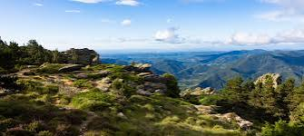

Parc naturel
régional du
Haut-LanguedocEntre Atlantique et Méditerranée


⟹ Sites Emblématiques ⟸
Le Parc naturel régional du Haut-Languedoc est né d’une volonté de répondre à une double préoccupation : préserver un territoire de moyenne montagne exceptionnel et lui offrir de nouvelles perspectives économiques et sociales. Son histoire s’inscrit dans le mouvement national qui conduit à la création des Parcs naturels régionaux en France par le décret du 1er mars 1967. À la différence d’un parc national, un parc naturel régional est un territoire habité dont le projet repose sur l’engagement volontaire des collectivités autour d’une charte.
À la fin des années 1960, le Haut-Languedoc connaît de profondes mutations. L’exode rural, le recul de certaines activités agricoles et artisanales et le vieillissement de la population fragilisent de nombreuses communes. Dans le même temps, la valeur des paysages, des forêts, des massifs du Caroux et de l’Espinouse, du Sidobre, des monts de Lacaune et de la Montagne Noire est de mieux en mieux reconnue. Des élus, naturalistes et acteurs locaux imaginent alors un projet capable d’associer protection et développement.
Cette réflexion intervient après plusieurs initiatives de protection, notamment dans le Caroux. Dès les années 1930, certains sites naturels sont reconnus pour leur intérêt paysager. Dans les années 1950, un projet de Parc national du Caroux est étudié. Il n’aboutit pas, mais contribue à la création d’une réserve de chasse en 1956 puis nourrit la réflexion sur un outil de protection davantage fondé sur l’adhésion des communes et le maintien des activités humaines.

Après plusieurs années d’études et de mobilisation locale, le Parc naturel régional du Haut-Languedoc est créé en 1973. Il appartient ainsi à la première génération des Parcs naturels régionaux français. À l’origine, il regroupe environ 70 communes et un territoire classé d’environ 147 000 hectares, tandis que son périmètre d’intervention est plus large. La première charte affirme déjà deux objectifs complémentaires : protéger et mettre en valeur le patrimoine naturel et historique, et soutenir la rénovation de l’économie traditionnelle, de l’artisanat et des activités d’accueil.
Le Parc occupe une position géographique très particulière, à cheval sur les anciennes régions Midi-Pyrénées et Languedoc-Roussillon, aujourd’hui réunies dans l’Occitanie. Il s’étend principalement dans le Tarn et l’Hérault. Son territoire se trouve sur la ligne de partage des eaux : certains cours d’eau rejoignent le bassin atlantique par le Tarn et la Garonne, d’autres descendent vers la Méditerranée. Cette situation explique la rencontre de fortes influences climatiques atlantiques, méditerranéennes et montagnardes.
Cette « rencontre des deux midis » est aussi culturelle. Les paysages passent des forêts humides et des prairies du versant atlantique aux garrigues, châtaigneraies, landes et vignobles sous influence méditerranéenne. Les architectures, les pratiques agricoles, les productions et les traditions varient elles aussi d’un versant à l’autre. Le Parc n’a donc jamais constitué un territoire uniforme : son identité repose au contraire sur la diversité de ses pays.
La première charte entraîne de nombreuses actions qui deviendront caractéristiques des politiques des Parcs naturels régionaux : inventaires du patrimoine naturel et géologique, protection de sites, soutien aux activités agricoles, réflexion sur l’urbanisme, valorisation de l’architecture locale, maîtrise de la publicité, développement d’un tourisme respectueux des paysages et sensibilisation des habitants à leur environnement.
En 1999, une seconde charte renouvelle et élargit le projet. Le périmètre atteint alors environ 93 communes et 260 000 hectares. La notion de développement durable prend une place croissante : gestion de l’eau, maintien des espaces agricoles, préservation de la biodiversité, qualité des paysages, développement économique et participation des habitants deviennent des axes structurants.
Une nouvelle charte, adoptée pour la période commencée en 2012, fixe trois grandes ambitions : préserver les patrimoines naturels, paysagers et architecturaux ; faire évoluer les comportements pour mieux vivre sur le territoire ; dynamiser la vie économique et sociale en valorisant les ressources locales. Sa durée a été prolongée jusqu’en 2027, tandis qu’une nouvelle charte est préparée pour la période suivante.
Le Parc protège et valorise un patrimoine façonné depuis la Préhistoire. Dolmens, menhirs et autres mégalithes rappellent l’ancienneté de l’occupation humaine. Les drailles témoignent de la transhumance ; les terrasses, murets et capitelles de l’aménagement agricole ; les châtaigneraies de l’économie vivrière des montagnes ; les moulins et anciens ateliers de l’utilisation de l’eau et des ressources locales. Dans les vallées, l’histoire textile, minière, verrière et industrielle a également profondément marqué les sociétés et les paysages.
La création du Parc en 1973 coïncide avec celle de la Réserve nationale de chasse du Caroux-Espinouse, issue d’une première réserve créée en 1956. Le retour et l’expansion du mouflon méditerranéen, introduit dans le massif entre 1956 et 1960, sont devenus l’un des symboles de cette histoire de la protection de la nature dans le Haut-Languedoc.
Au fil du temps, le rôle du Parc s’est considérablement élargi. Il intervient dans la préservation de la biodiversité, l’agriculture, la forêt, l’énergie, l’urbanisme, l’alimentation, le tourisme, la culture, l’éducation à l’environnement et la valorisation des savoir-faire. Il ne possède pas le territoire : sa force repose sur la Charte, document collectif par lequel communes, intercommunalités, départements, région et État s’engagent sur un projet commun.
Le Parc naturel régional du Haut-Languedoc est ainsi l’héritier d’une histoire beaucoup plus ancienne que sa date de création. Ses paysages sont le résultat de millions d’années d’évolution géologique et de plusieurs millénaires d’activités humaines. Sa création en 1973 marque cependant une étape essentielle : celle où les habitants et les collectivités choisissent de considérer ce patrimoine naturel, culturel et paysager comme une ressource à transmettre, tout en maintenant un territoire vivant.
Le parc recense 18 unités paysagères réparties en 7 micro-régions, toutes situées sur des reliefs marqués : le massif granitique du Sidobre, la Montagne noire, les monts de Lacaune et de l'Orb, le plateau des Lacs, ou encore le Caroux et l'Espinouse, entaillés par les gorges d'Héric et de Colombières.
420 espèces animales remarquables, dont 250 d'oiseaux et 26 des 33 espèces de chauves-souris répertoriées en France, ainsi que 2 500 espèces de plantes à fleurs peuplent ce territoire de moyenne montagne.
— Inventaires naturalistes du Parc naturel régional du Haut-LanguedocParmi les espèces emblématiques du parc figurent la pie-grièche à tête rousse, l'aigle de Bonelli, la loutre d'Europe, la truite fario, ainsi que le mouflon méditerranéen, introduit dans le massif du Caroux-Espinouse à la fin des années 1950 et aujourd'hui emblème du territoire.
Massif du Caroux-Espinouse décor de haute montagne, gorges d'Héric et population de mouflons méditerranéens, au cœur même du parc.
Montagne noire et canal du Midi ce « château d'eau » naturel alimente depuis 1662 le canal du Midi, aujourd'hui classé au patrimoine mondial de l'UNESCO.
Monts de Lacaune pays de sources, de landes et de tourbières, aux confins du Tarn et de l'Hérault.
Sidobre à Castres, un extraordinaire chaos de blocs granitiques façonnés par des millions d'années d'érosion.